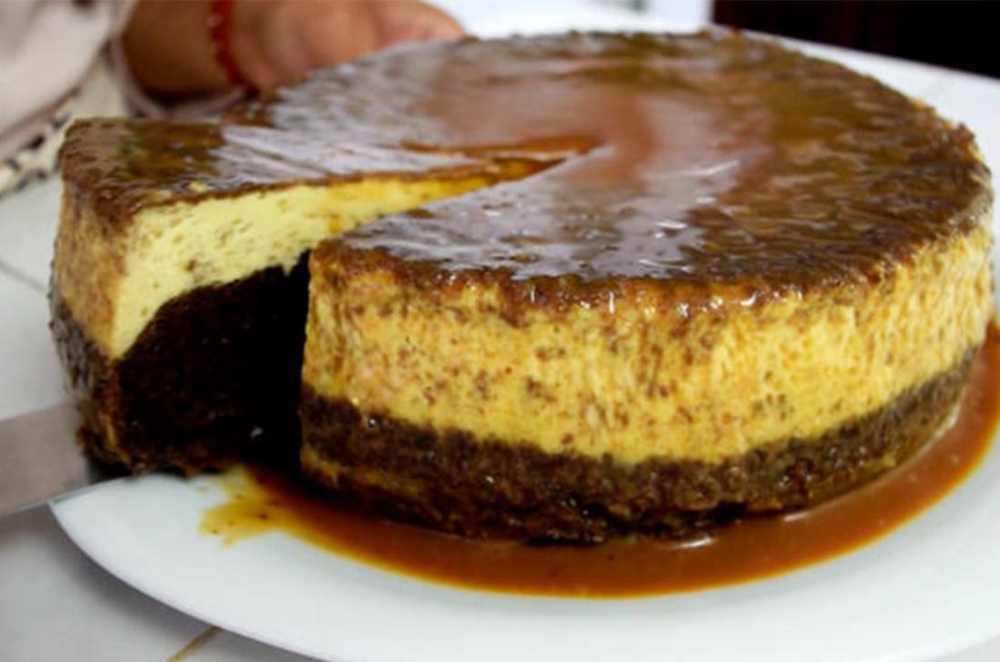

Preparación
- Pre caliente el horno a 180 grados centígrados. Engrase un molde redondo o de rosca.
- Para el pastel: Prepare la harina de chocolate de acuerdo a las instrucciones de la caja y vierta sobre el molde para hornear.
- Para el flan: En una licuadora mezcle todos los ingredientes del flan, las leches, los huevos, la vainilla y el ron.
- Vacíalo en el molde preparado la mezcla del pastel de chocolate y,encima,vierte poco a poco la mezcla del flan.
- Tapa el molde con papel aluminio y hornea a baño María (sobre un refractario con agua) de 1 a 1/2 horas.
- Retire del horno y permita que se enfrie antes de desmoldar.
|
 |